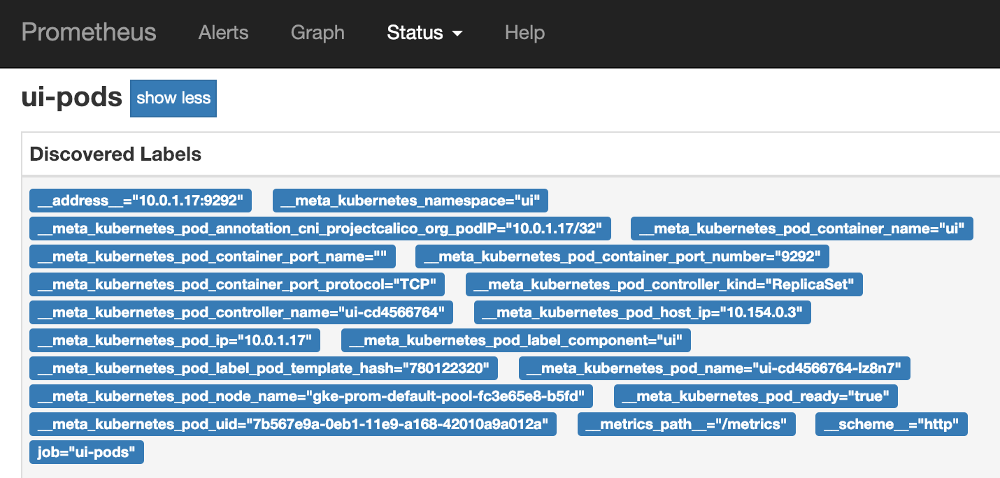
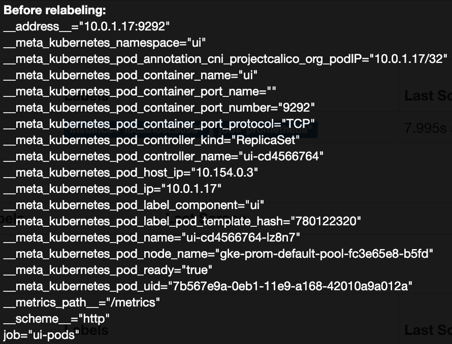
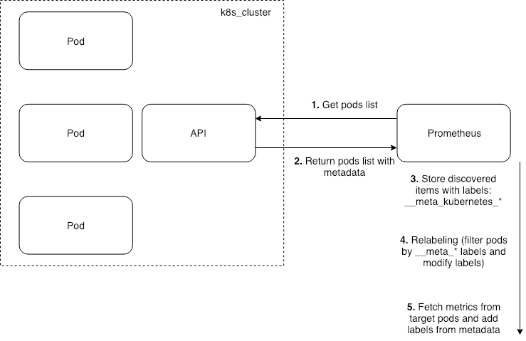

Prometheus and Kubernetes
02 Jan 2019Содержание
В этой статье я хочу разобрать механизм работы Service Discovery в Prometheus для Kubernetes и пройти путь от создания pod в Kubernetes до его появления в Prometheus.
Service Discovery
Общий механизм работы следующий:
- В файле конфигурации Prometheus указываются параметры для подключения к API Kubernetes. В простейшем примере это адрес API, CA сертификат и Bearer token;
- В файле конфигурации Prometheus создается Job с ключевым словом kubernetes_sd_configs и указанием на роль объектов (о них далее) с которых Prometheus будет собирать метрики.
- В описании Job указываются параметры relabeling, или, проще говоря, создаются правила фильтрации, определяющие, с каких именно объектов Prometheus будет собирать метрики (например, в кластере 10 разных сервисов, но метрики в данной Job необходимо собирать только с одного из них). Также механизм relabeling может использоваться для изменения значений меток (например для доступа к объектам мониторинга через API, а не напрямую по внутренним адресам).
Посмотрим, как это происходит на примере кастомного приложения ui, которое отдает свои метрики по URL http://IP_ADDRESS:9292/metrics.
Развернем приложение в кластере с использованием манифеста:
apiVersion: apps/v1
kind: Deployment
metadata:
name: ui
labels:
component: ui
namespace: ui
spec:
replicas: 1
selector:
matchLabels:
component: ui
template:
metadata:
name: ui-pod
labels:
component: ui
spec:
containers:
- image: avtandilko/ui:7
name: ui
ports:
- containerPort: 9292
Далее развернем в кластере Prometheus с использованием helm-чарта stable/prometheus. В файле prometheus-values.yml будем переопределять параметры установки Prometheus, в том числе его конфигурацию.
helm install --name prometheus stable/prometheus -f prometheus-values.yml
Теперь попробуем организовать мониторинг нашего приложения. Для начала приведем примерный алгоритм работы Service Discovery в Prometheus:
- Указываем в конфигурации, что хотим мониторить некие объекты кластера, например - pod.
- Prometheus идет в API кластера, получает список всех созданных pod (адрес может быть примерно таким https://API_ADDRESS/api/v1/pods) и описание каждого пода в следующем формате (оставлен только вывод который будет использован в дальнейшем):
{
"kind": "Pod",
"apiVersion": "v1",
"metadata": {
"name": "ui-cd4566764-lz8n7",
"generateName": "ui-cd4566764-",
"namespace": "ui",
"selfLink": "/api/v1/namespaces/ui/pods/ui-cd4566764-lz8n7",
"uid": "7b567e9a-0eb1-11e9-a168-42010a9a012a",
"labels": {
"component": "ui",
"pod-template-hash": "780122320"
},
"annotations": {
"cni.projectcalico.org/podIP": "10.0.1.17/32"
},
"ownerReferences": [
{
"apiVersion": "apps/v1",
"kind": "ReplicaSet",
"name": "ui-cd4566764",
"controller": true
}
]
},
"spec": {
"containers": [
{
"name": "ui",
"image": "avtandilko/ui:7",
"ports": [
{
"containerPort": 9292,
"protocol": "TCP"
}
],
"status": {
"phase": "Running",
"conditions": [
{
"type": "Ready",
"status": "True"
}
],
"hostIP": "10.154.0.3",
"podIP": "10.0.1.17"
}
}
- Полученное описение из json будет представлено в UI Prometheus в собственном формате. Для pods будут созданы следующие meta labels;
- Итого в секции Status/Service Discovery в Prometheus будут видны все найденные поды и их метки, полученные из Kubernetes. 
В дальнейшем по меткам при помощи механизма relabeling можно фильтровать с каких именно объектов необходимо снимать метрики.
Roles
Немного подробнее о том, для каких объектов у Prometheus работает механизм Service Discovery. Эта секция практически полностью является переводом документации Prometheus.
Существует 5 типов объектов, информацию о которых Prometheus может выгрузить из Kubernetes:
- Nodes - подходит для сущностей, у которых на каждой физической ноде кластера находится по одному экземпляру (kubelet, etc…). Kubernetes отдает список нод с определенными метками (при помощи relabeling можно изменить, например, порт с которого будут собираться метрики, по умолчанию это порт kubelet);
- Pod - Kubernetes отдает список всех подов, для каждого слушаемого контейнером порта (указанного при этом в конфигурации) будет создаваться отдельный target;
- Endpoints - Kubernetes будет возвращать список всех Endpoint, созданных каким либо сервисом (либо вручную). Помимо меток непосредственно Endpoint, также собираются метки, характерные для сервисов (если Endpoint создан сервисом) и метки характерные для подов (если Endpoint “смотрит” на pod);
- Service и Ingress - соответственно отдается список Service и Ingress в кластере, с характерными для них метками. Могут использоваться для BlackBox мониторинга (например, для оценки - работает ли приложение в целом, не заостряя внимание на метриках конкретных pod данного приложения).
Relabeling
Как говорилось ранее, помимо того, что Prometheus может собрать информацию об объектах кластера, нам предлагается механизм фильтрации по меткам и модификации данных меток. Следует отметить, что все метки формата __meta_*, полученные из Kubernetes, не попадут в итоговые метки для метрик в Prometheus.
Общий формат описания relabeling в конфигурации Prometheus выглядит следующим образом:
- source_labels: метки, полученные в процессе Service Discovery, с которыми необходимо произвести какое-либо действие
separator: разделитель в случае действий над несколькими метками
regex: регулярное выражение для поиска значений меток или их названий
target_label: метки для метрик в которые будут преобразованы метки Service Discovery в случае совершения с ними каких-то действий
replacement: значение, на которое будет заменено выражение, подпадающее под regex в source_labels
action: действие, которое необходимо будет произвести с меткой
Стоит заметить, наличие всех перечисленных выше параметров в конфигурации необязательно, их набор может варьироваться в зависимости от того, какое действие необходимо произвести с метками, полученными в процессе Service Discovery.
Теперь рассмотрим типы действий (action) которые можно произвести с метками:
- Replace - заменить в source_labels подпадающее под regex значение на replacement, и записть это в target_labels;
- Keep - оставить для дальнейшего рассмотрения только те объекты, значения source_labels которых подпадают под regex;
- Drop - оставить для дальнейшего рассмотрения только те объекты, значения source_labels которых НЕ подпадают под regex;
- Labelmap - скопировать набор значений меток из source_labels в target_labels. Например, данная конфигурация превратит все source_labels вида
__meta_kubernetes_service_label_NAME="VALUE"в target_labels видаNAME="VALUE":
- action: labelmap
regex: __meta_kubernetes_pod_label_(.+)
- Labeldrop - убрать из source_labels все метки, имена которых подпадают под regex;
- Labelkeep - оставить в source_labels только те метки, имена которых подпадают под regex.
Приведем практический пример. На входе есть приложение ui, которое после Service Discovery отдает в Prometheus следующий набор source_labels: 
Применим следующую конфигурацию relabeling:
- job_name: 'ui-pods'
kubernetes_sd_configs:
- role: pod
relabel_configs:
# Фильтрация. Оставляем для дальнейшей обработки (они появятся в targets) все поды, у которых есть kubernetes метка component со значением ui
- source_labels: [__meta_kubernetes_pod_label_component]
action: keep
regex: ui
# Модификация
# Переносим в target_labels все source_labels, соответствующие regex (как в примере про labelmap)
- action: labelmap
regex: __meta_kubernetes_pod_label_(.+)
# Переносим значения source_label в target_label для namespace и pod_name
- source_labels: [__meta_kubernetes_namespace]
target_label: kubernetes_namespace
- source_labels: [__meta_kubernetes_pod_name]
target_label: kubernetes_name
В итоге в метрики приложения на основе метаданных:
- Будут перенесены все метки Kubernetes (component=”ui”)
- Добавлены метки kubernetes_name и kubernetes_namespace с соответствующими значениями.
В итоге все метрики собираемые с приложения будут выглядеть примерно следующим образом:
ui_health{component="ui",instance="10.0.1.17:9292",job="ui-pods",kubernetes_name="ui-cd4566764-lz8n7",kubernetes_namespace="ui",pod_template_hash="780122320"}
Весь процесс схематично можно представить следующим образом: 